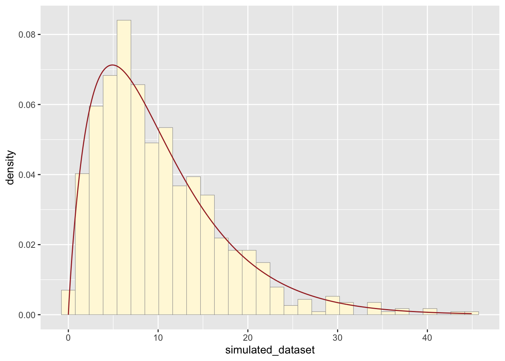

Data for this homework was obtained from www.data.gov and is titled “Harmful Algal Bloom Statewide Occurrence Summary: 2012-2018” from the State of New York. For context, HABs/habs = Harmful Algal Blooms
Importing necessary libraries:
library(ggplot2)
library(MASS)Importing dataset:
habs <- read.table("HABs_2012-2018.csv", header=TRUE,sep=",")Cleaning up data and assigning variable of interest:
habs <- na.omit(habs)
habs$myVar <- habs$Number.of.Weeks.on.DEC.Notification.ListSummarizing dataset:
str(habs$myVar)## int [1:737] 10 12 25 4 4 14 15 18 5 33 ...summary(habs$myVar)## Min. 1st Qu. Median Mean 3rd Qu. Max.
## 1.00 5.00 9.00 10.26 15.00 33.00Histogram of Number of Weeks HABs were listed on NYSDEC Notification List:
p1 <- ggplot(data=habs, aes(x=myVar, y=..density..)) +
geom_histogram(color="grey60",fill="cornsilk",size=0.2) ## Warning: Using `size` aesthetic for lines was deprecated in ggplot2 3.4.0.
## ℹ Please use `linewidth` instead.
## This warning is displayed once every 8 hours.
## Call `lifecycle::last_lifecycle_warnings()` to see where this warning was
## generated.print(p1)## Warning: The dot-dot notation (`..density..`) was deprecated in ggplot2 3.4.0.
## ℹ Please use `after_stat(density)` instead.
## This warning is displayed once every 8 hours.
## Call `lifecycle::last_lifecycle_warnings()` to see where this warning was
## generated.## `stat_bin()` using `bins = 30`. Pick better value with `binwidth`.Adding empirical density curve:
p1 <- p1 + geom_density(linetype="dotted",size=0.75)
print(p1)## `stat_bin()` using `bins = 30`. Pick better value with `binwidth`.Maximum likelihood parameters for normal distribution
normPars <- fitdistr(habs$myVar,"normal")
print(normPars)## mean sd
## 10.2605156 6.8003094
## ( 0.2504926) ( 0.1771250)str(normPars)## List of 5
## $ estimate: Named num [1:2] 10.3 6.8
## ..- attr(*, "names")= chr [1:2] "mean" "sd"
## $ sd : Named num [1:2] 0.25 0.177
## ..- attr(*, "names")= chr [1:2] "mean" "sd"
## $ vcov : num [1:2, 1:2] 0.0627 0 0 0.0314
## ..- attr(*, "dimnames")=List of 2
## .. ..$ : chr [1:2] "mean" "sd"
## .. ..$ : chr [1:2] "mean" "sd"
## $ n : int 737
## $ loglik : num -2459
## - attr(*, "class")= chr "fitdistr"normPars$estimate["mean"]## mean
## 10.26052Plotting normal probability density on the histogram:
meanML <- normPars$estimate["mean"]
sdML <- normPars$estimate["sd"]
xval <- seq(0,max(habs$myVar),len=length(habs$myVar))
stat <- stat_function(aes(x = xval, y = ..y..), fun = dnorm, colour="red", n = length(habs$myVar), args = list(mean = meanML, sd = sdML))
p1 + stat## `stat_bin()` using `bins = 30`. Pick better value with `binwidth`.Plotting exponential probability density on the histogram:
expoPars <- fitdistr(habs$myVar,"exponential")
rateML <- expoPars$estimate["rate"]
stat2 <- stat_function(aes(x = xval, y = ..y..), fun = dexp, colour="blue", n = length(habs$myVar), args = list(rate=rateML))
p1 + stat + stat2## `stat_bin()` using `bins = 30`. Pick better value with `binwidth`.Plotting uniform probability density on the histogram:
stat3 <- stat_function(aes(x = xval, y = ..y..), fun = dunif, colour="darkgreen", n = length(habs$myVar), args = list(min=min(habs$myVar), max=max(habs$myVar)))
p1 + stat + stat2 + stat3## `stat_bin()` using `bins = 30`. Pick better value with `binwidth`.Plotting gamma probability density on the histogram:
gammaPars <- fitdistr(habs$myVar,"gamma")## Warning in densfun(x, parm[1], parm[2], ...): NaNs produced
## Warning in densfun(x, parm[1], parm[2], ...): NaNs produced
## Warning in densfun(x, parm[1], parm[2], ...): NaNs produced
## Warning in densfun(x, parm[1], parm[2], ...): NaNs produced
## Warning in densfun(x, parm[1], parm[2], ...): NaNs producedshapeML <- gammaPars$estimate["shape"]
rateML <- gammaPars$estimate["rate"]
stat4 <- stat_function(aes(x = xval, y = ..y..), fun = dgamma, colour="brown", n = length(habs$myVar), args = list(shape=shapeML, rate=rateML))
p1 + stat + stat2 + stat3 + stat4## `stat_bin()` using `bins = 30`. Pick better value with `binwidth`.Plotting beta probability density on the histogram:
pSpecial <- ggplot(data=habs, aes(x=myVar/(max(myVar + 0.1)), y=..density..)) +
geom_histogram(color="grey60",fill="cornsilk",size=0.2) +
xlim(c(0,1)) +
geom_density(size=0.75,linetype="dotted")
betaPars <- fitdistr(x=habs$myVar/max(habs$myVar + 0.1),start=list(shape1=1,shape2=2),"beta")
shape1ML <- betaPars$estimate["shape1"]
shape2ML <- betaPars$estimate["shape2"]
statSpecial <- stat_function(aes(x = xval, y = ..y..), fun = dbeta, colour="orchid", n = length(habs$myVar), args = list(shape1=shape1ML,shape2=shape2ML))
pSpecial + statSpecial## `stat_bin()` using `bins = 30`. Pick better value with `binwidth`.## Warning: Removed 2 rows containing missing values or values outside the scale range
## (`geom_bar()`).Simulated New Dataset
Creating a simulated dataset based on gamma probability density. Here I used “rgamma” instead of “dgamma”, which will generate random values.
simulated_dataset <- rgamma(n=length(habs$myVar),shape=shapeML,rate=rateML)
simulated_z <- 1:length(habs$myVar)
simulated_df <- data.frame(simulated_dataset,simulated_z)Summary of simulated dataset:
str(simulated_dataset)## num [1:737] 10.85 14.46 6.28 2.83 3.51 ...summary(simulated_dataset)## Min. 1st Qu. Median Mean 3rd Qu. Max.
## 0.1474 5.3086 8.8811 10.2518 13.5070 43.1930Plotting the histogram based on gamma probability density, which appears to best fit the data compared to normal, exponential, uniform, and beta probability.
p2 <- ggplot(data=simulated_df, aes(x=simulated_dataset, y=..density..)) +
geom_histogram(color="grey60",fill="cornsilk",linewidth=0.2)
p2 + stat4## `stat_bin()` using `bins = 30`. Pick better value with `binwidth`.